14 schermate vive con le immagini dell'app. Prima il confronto con l'Atlante attuale, poi le schermate. Nessuna implementazione.
Trascina la maniglia ambra.
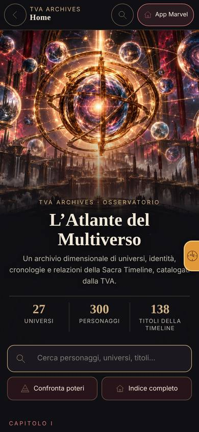
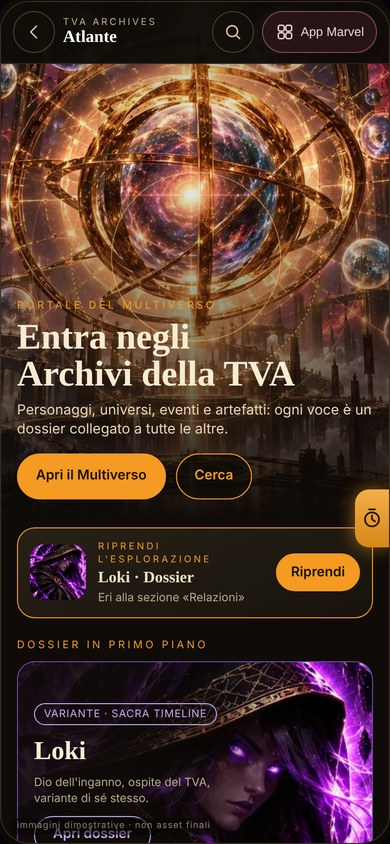
ATTUALE2.0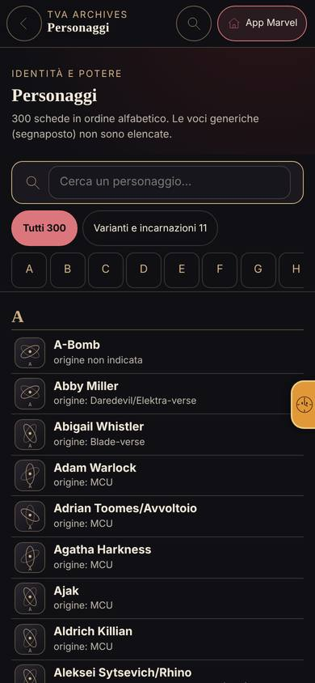
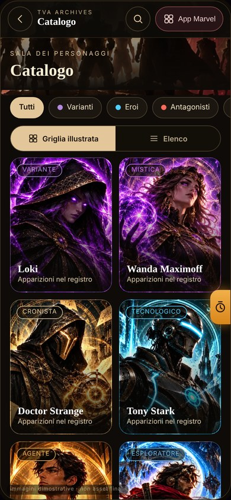
ATTUALE2.0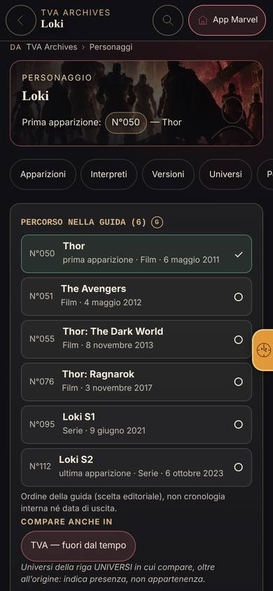
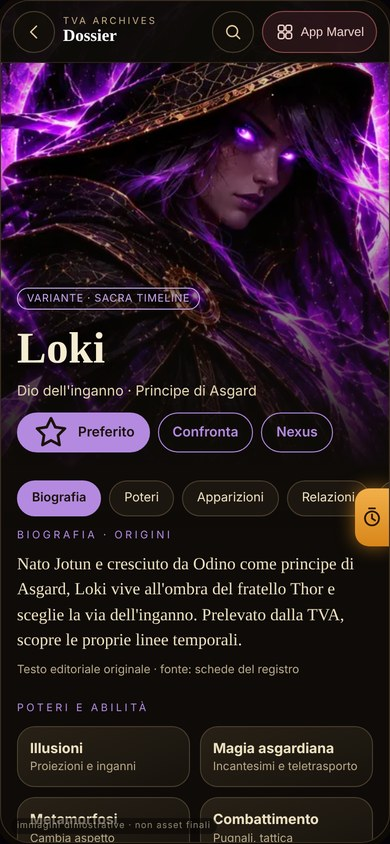
ATTUALE2.0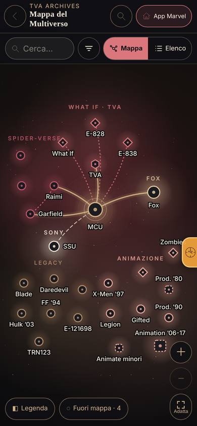
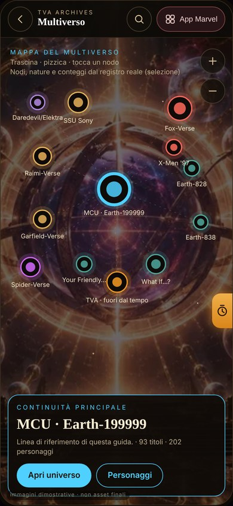
ATTUALE2.0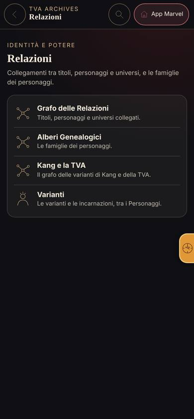
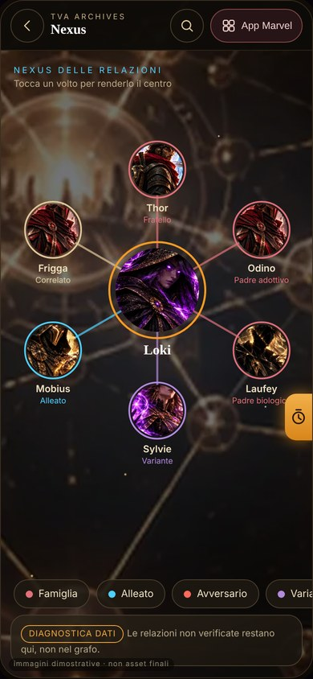
ATTUALE2.0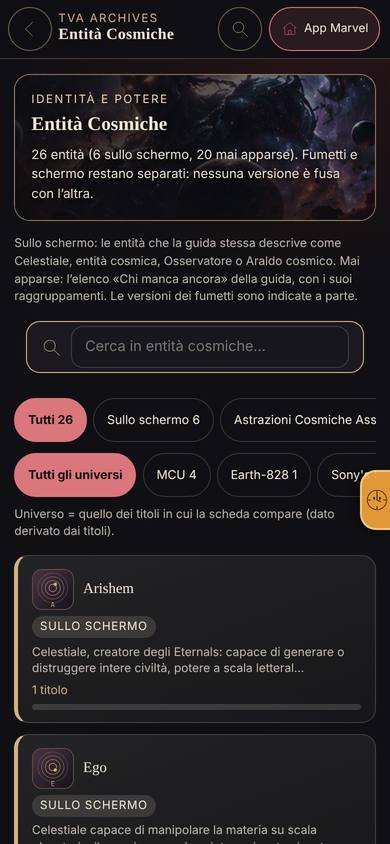
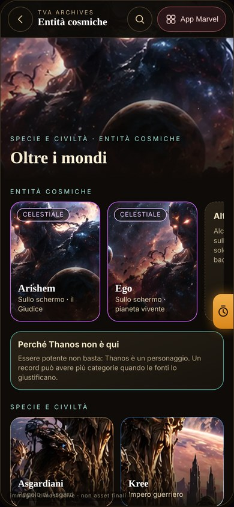
ATTUALE2.0Shell «TVA Archives» con titolo e tasto indietro · pillola «App Marvel» · linguetta ambra di Miss Minutes · palette nero caldo + oro/ambra · titoli Spectral · portali illustrati per capitolo · animazioni lente di respiro e scintillio · tutti gli ID e i link esistenti.
Più immagine e meno rettangoli · ogni sala ha un colore e una personalità · schede con ritratto · mappa e Nexus manipolabili · ricerca che risponde mentre scrivi · progressione visibile e onesta sui badge non ancora ottenibili.
Portale animato, dossier in primo piano, categorie illustrate, ripresa dell'esplorazione.
Personaggi, universi, eventi e artefatti: ogni voce è un dossier collegato a tutte le altre.
Griglia illustrata a due colonne e modalità elenco (tocca per cambiare).
Identità cromatica viola/oro, sezioni navigabili, relazioni colorate. Scorri.
Nato Jotun e cresciuto da Odino come principe di Asgard, Loki vive all'ombra del fratello Thor e sceglie la via dell'inganno. Prelevato dalla TVA, scopre le proprie linee temporali.
Il numero di identità è calcolato dai dati: 6 mostrate, 6 dichiarate.
Ritratti affiancati, differenze narrative, nessuna statistica inventata.
| Steve | Sam |
|---|---|
| Origine dei poteri | |
| Siero del supersoldato | Esoscheletro EXO-7 Falcon e addestramento |
| Equipaggiamento | |
| Scudo | Ali, scudo (dopo il passaggio del mantello) |
| Punti di forza | |
| Tattica, resistenza, leadership | Mobilità aerea, adattabilità |
| Debolezze | |
| Bozza da validare | Bozza da validare |
Mappa interattiva: trascina, zoom, tocca un nodo.
Tocca un volto per cambiare il centro; relazioni colorate per tipo.
Copertine, cronologia interna, protagonisti e conseguenze.
Schede con luce e carattere propri per ogni oggetto.
Tre sezioni in un'unica sala (tocca i tab).
Celestiali con badge «sullo schermo / solo fumetti»; Thanos resta personaggio.
Risultati per tipo mentre scrivi (prova a digitare).
Copertine e progressione delle collezioni.
XP con tetto giornaliero, badge reali e stato di disponibilità.